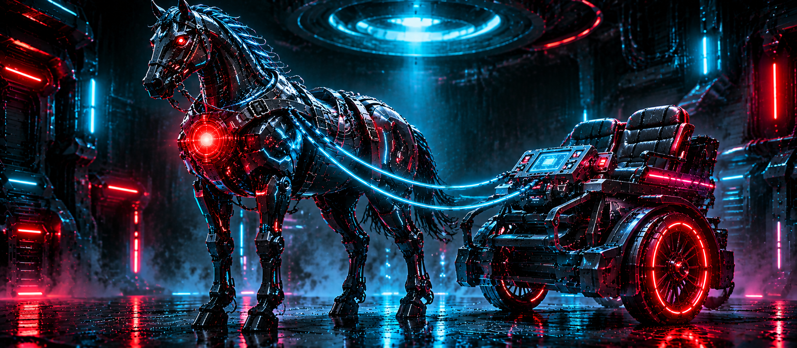
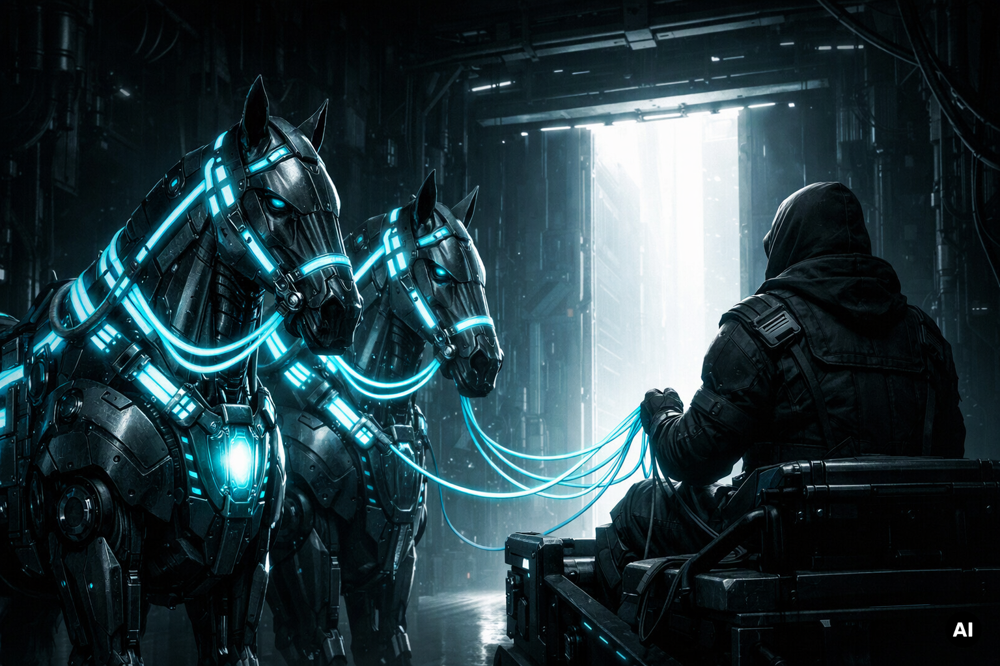

> STATUS: KERN OHNE GESCHIRR – 0/6 GURTE ANGELEGT
KI-Agenten
Das Pferd ist stark. Wer hält die Zügel?
Der KI-Kern ist über MCP mit Werkzeugen und Daten verbunden. Aber ein Sprachmodell kann selbst nichts ausführen und merkt sich nichts. Erst ein Rahmenprogramm, der Harness (englisch: Geschirr), wird mit einem Zugang zum Sprachmodell zum Agenten: Er spricht das Modell über eine API an, lenkt seine Kraft, setzt Grenzen und gibt dem Menschen die Zügel in die Hand.
In sechs Leveln legst du dem Kern sein Geschirr an. Dabei geht es um drei Fragen: Wer entscheidet? Wer darf was? Wer ist verantwortlich? Jedes Level endet mit einem Clearance-Test: 5 Fragen in Folge richtig, dann sitzt der Gurt.
Pferd, Geschirr, Kutscher
Das Bild begleitet dich durch alle Level:
Pferd = LLM
Stark in Sprache, weiß aber nicht, wohin die Fahrt geht, und kann selbst nichts ausführen.
Geschirr = Harness
Überträgt die Kraft auf die Tools und begrenzt, was das LLM darf.
Kutscher = Mensch
Gibt das Ziel vor, hält die Zügel, gibt frei und kann bremsen.
Und der Wagen mit Ladung? Das sind die Tools und Daten: MCP-Server und Datenbank.
Die sechs Level
Das Pferd ohne Geschirr
Was ein LLM kann, was nicht, und was es bei jedem Aufruf wirklich sieht.
LVL 1 // SCHLEIFEDie Agenten-Schleife
Planen, Tool wünschen, Ergebnis lesen, weiter. Und: Workflow oder Agent?
LVL 2 // GESCHIRRDer Harness
Du spielst selbst das LLM. Warum Rechte in den Code gehören und nicht in den Prompt.
LVL 3 // ZÜGELMensch-Maschine-Schnittstellen
Auftrag, Freigabe, Rückfrage, Not-Aus. Wie viel Kontrolle gibst du ab?
LVL 4 // GESPANNMultiagentensysteme
Ein Team aus Agenten: Rechte verteilen, Kosten zählen, stille Post erkennen. Dazu A2A.
LVL 5 // KUTSCHERSelbst auf den Kutschbock
Eigene Agenten definieren, dann im Praxis-Repo mit Python, n8n und Claude Code umsetzen.

GESPANN STARTKLAR
Alle sechs Gurte sitzen. Du hast die Clearance KUTSCHER erreicht.
Jetzt ab auf den echten Kutschbock: Im Praxis-Repo SQLite-per-MCP baust und steuerst du deine Agenten selbst.